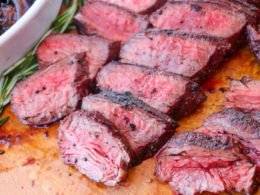

Hanger Steak Recipe

Description
Butcher (or hanger) steak is great pan cooked, broiled, or grilled. It takes to marinades wonderfully, and really can be substituted for any cut of steak. Just be sure to take the time to trim it well. In this recipe, we will be cooking the steak on a pan as opposed to a grill.
Ingredients
- 1 (2pound) buther's steak (hanger steak)
- salt and ffreshly ground black pepper to tease
- 1 tablespoon clarified butter
- 2/3 cup chicken broth
- 2 teaspoons balsamic vinegar
- 2 tablespoons cold butter, cut into cubes
- salt to taste
Directions
- Remove all silver skin and extra fat from the steak. Carefully cut out the connective tissue that connects the 2 halves of the steak, separating the whole into 2 long pieces. Cut lobe of meat from one half (it's a piece that is slightly separated from the larger half). Then cut each of the 2 larger halves into 2 steaks each. Sprinkle with salt and pepper.
- Heat skillet over high heat. Add clarified butter when pan is hot, then place the steaks in the pan. Reduce heat to medium. Cook until browned on all sides, firm, and reddish-pink on the inside. An instant-read thermometer inserted into the center should read 125 degrees F (52 degrees C), a total of about 12 minutes. (This cut of meat has a sort of triangular shape, so about 4 minutes per side.) Transfer to a warm plate and tent with foil to let steaks rest and allow temperature to rise to 130 degrees F.
- Pour stock into skillet set over medium heat. Stir with a wooden spoon scraping up the browned bits from the bottom. When brownings dissolve and liquid begins to reduce after 2 or 3 minutes, reduce heat to low. Add accumulated juices from the meat, balsamic vinegar, and butter chunks. Cook and stir until butter melts. If liquid has reduced too much, add a splash of broth. Taste to check if sauce needs a bit of salt.
- To serve, slice steaks and spoon pan sauce over them.